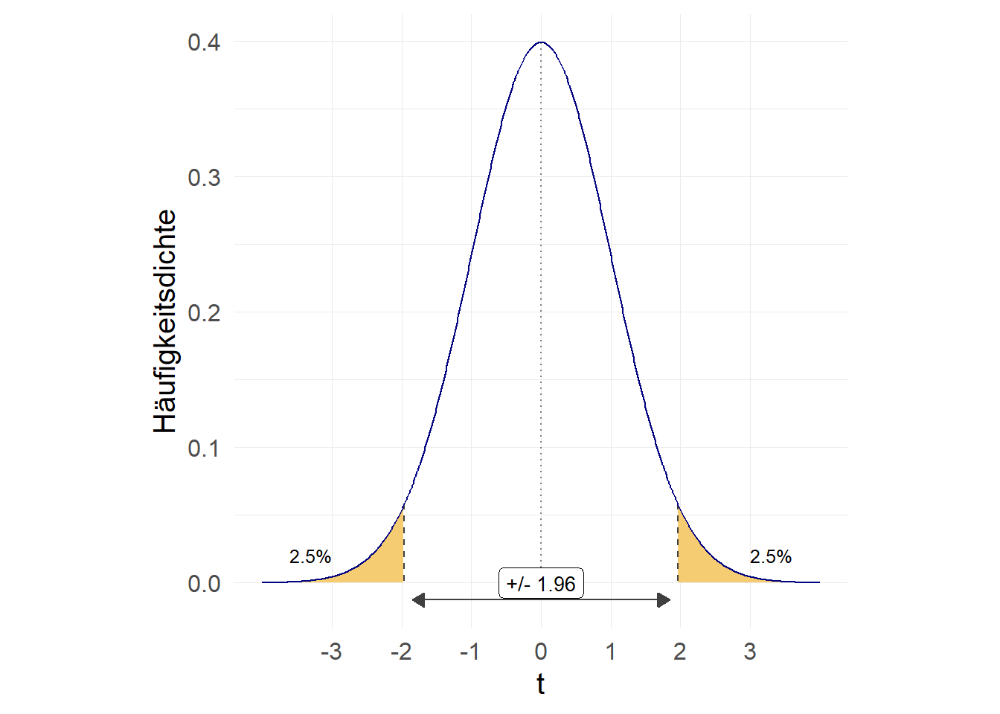
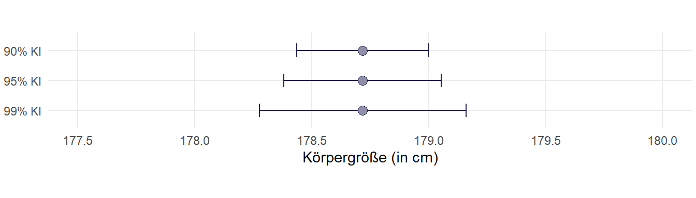
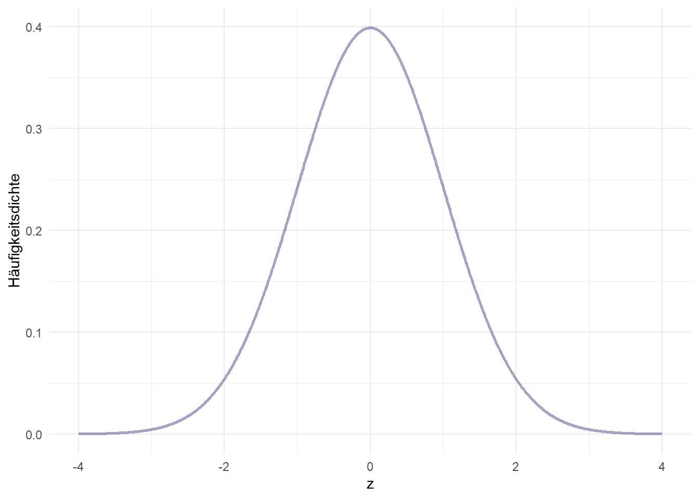
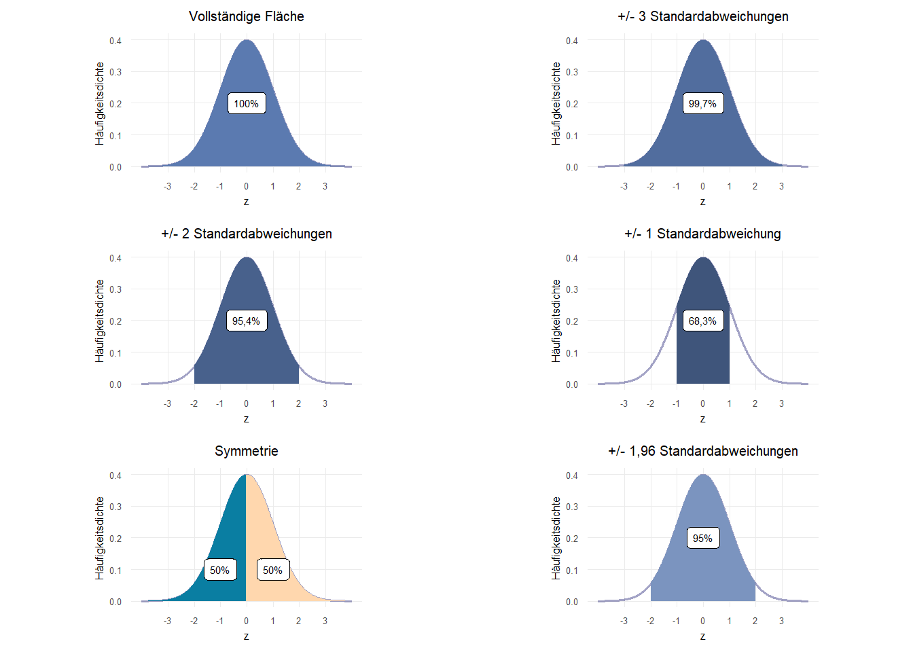
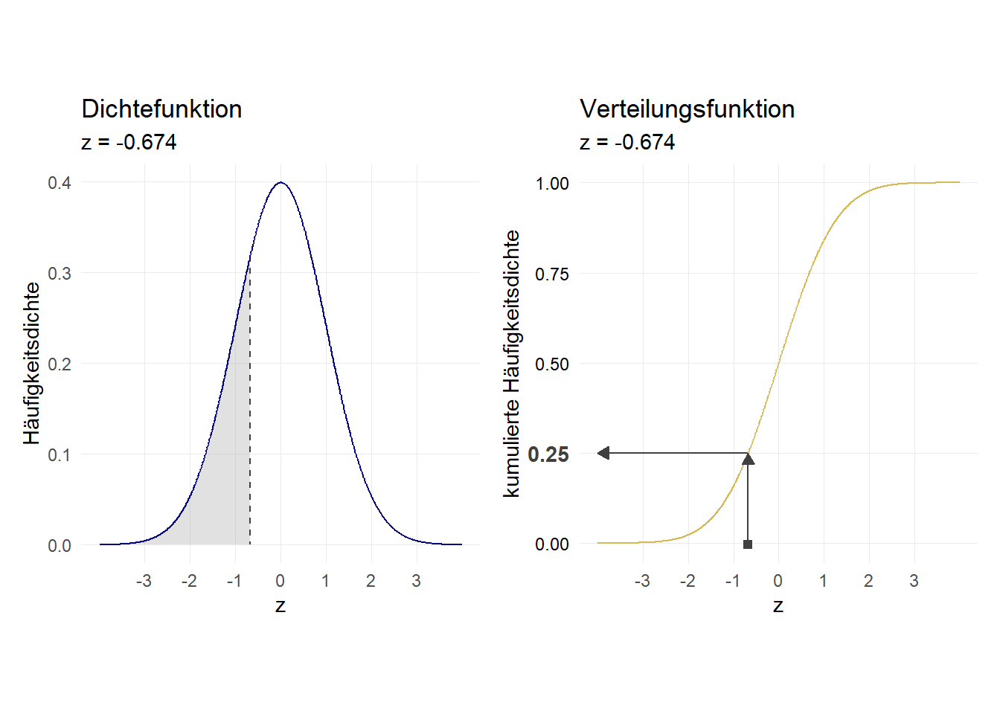
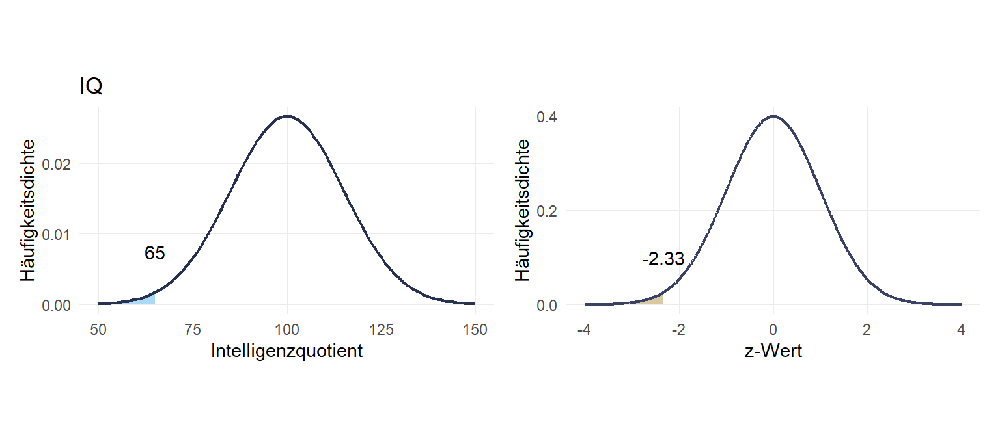
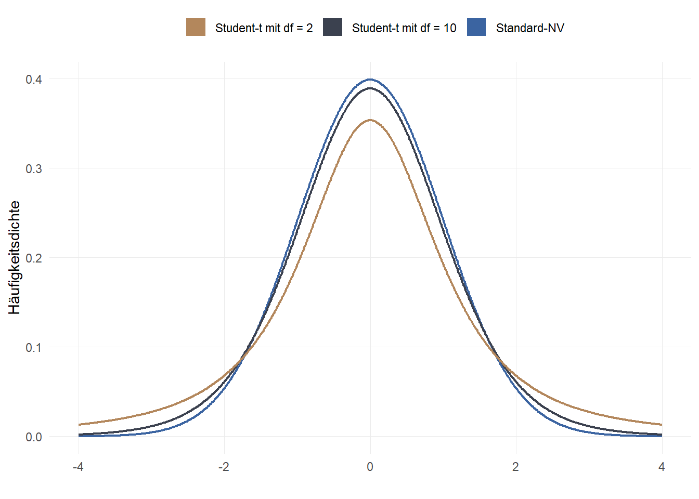

7 Inferenzstatistik I
Wir möchten auf Basis des Allbus von 2014 die durchschnittliche Körpergröße von Männern in Deutschland ermitteln. Dazu lesen wir zunächst den Datensatz ein und wählen dann nur die Angaben für das Jahr 2014 aus, die zugleich auch von Männern (sex == 1) sind. Um bei der weiteren Berechnung die Missings ignorieren zu können, filtern wir mit hs16 > 0 zusätzlich nur nach den Beobachtungen nicht eine gültige Angabe für hs16 haben:
(66403 observations deleted)7.1 Inferenz
Wenn wir jetzt die durchschnittliche Körpergröße berechnen, ist das zwar für die Stichprobe korrekt (und exakt):
variable | mean
-------------+----------
hs16 | 178.2185
------------------------Allerdings ist sehr unwahrscheinlich, dass die durchschnittliche Körpergröße in Deutschland im Jahr 2014 genau 178.7179 cm betrug. Jedoch kann auf Basis des zentralen Grenzwertsatzes angenommen werden, dass bei genügend großer Fallzahl die Mittelwerte bei wiederholten SP normalverteilt sind.
Somit können wir auf Basis einer Stichprobe das Konfidenzintervall einer Schätzung bestimmen, indem wir um den Punktschätzer (den Stichproben-Mittelwert, also die 178.7179 cm) mit Hilfe des eines geeigneten \(t\)-Werts und des Standardfehlers (\(\frac{s}{\sqrt{n}}\)1) einen Wertebereich um den Mittelwert \(\bar{x}\) konstruieren.
\[\bar{x}\,\pm\,t\times\frac{s}{\sqrt{n}}\]
7.2 Parametrische KI-Schätzung
7.2.1 t-/z-Wert
Das \(t\) kommt dabei aus der Student-t-Verteilung bzw. als \(z\)-Wert aus der Standard-Normalverteilung. \(t\) wählen wir dabei so, dass bei wiederholter Stichprobenziehung 95% der resultierenden KI den wahren Wert aus der Grundgesamtheit beinhalten würden:

Aufgrund der Symmetrie teilen wir die Irrtumswahrscheinlichkeit also auf jeweils 2,5% auf und können mit invttail(df,p) den entsprechenden \(t\)-Wert nachsehen, wobei df = \(n-1\) und p die Irrtumswahrscheinlichkeit bezeichnet. invttail kumuliert dabei von rechts nach links. Die gezeigte Verteilung unterstellt dabei eine Stichprobe von \(n=10.000\):
- bei welchem t-Wert liegen 2.5% rechts davon?
1.9602013- bei welchem t-Wert liegen 2.5% links bzw. 97.5% rechts davon?
-1.9602013Für kleine Stichproben ist der t-Wert deutlich größer, um die zusätzliche Unsicherheit der Stichprobengröße zu berücksichtigen. Mit steigendem \(n\) bzw. \(df\) nähert sich der t-Wert dem z-Wert der Standard-NV an:
-1.959964-3.1824463-2.0422725-1.967903-1.9607551Leider funktioniert invnormal umgekehrt von invttail und kumuliert von links nach rechts - wie man es erwarten würde….) invnormal zeigt also die Fläche links, invttail die Fläche rechts - daher entsprechen sich invnormal(.025) und invttail(df, .975)
Es gibt auch andere Varianten, zB. 90% oder 99%:
1.645006
2.5763211
7.2.2 Standardfehler
Der zweite Bestandteil der Formel \(\frac{s}{\sqrt{n}}\) ergibt sich aus den Stichprobenparametern: \(s\) ist die Standardabweichung in der Stichprobe und \(n\) ist die Stichprobengröße. Um diese nachzusehen, können wir mit tabstat hs16, s(sd n) die Standardabweichung sowie die Fallzahl (ohne Missings) ausgeben lassen. Da wir mean auch gleich benötigen, lassen wir uns das auch nochmal ausgeben:
variable | mean sd N
-------------+------------------------------
hs16 | 178.2185 7.197386 842
--------------------------------------------1.96131517.2.3 KIs berechnen
Dann können wir für unsere Körpergrößenschätzung folgendes 95%-KI berechnen - zur Erinnerung die Formel:
\[\bar{x}\,\pm\,t\times\frac{s}{\sqrt{n}}\]
Untere 95%Grenze:
178.38204Obere 95%-Grenze:
179.05376Für das 90%-KI würde sich entsprechend ergeben:
1.6457213Untere 90%-Grenze:
178.43608Obere 90%-Grenze:
178.999727.2.4 mean
Die gute Nachricht: Stata macht das mit mean automatisch für uns:
Mean estimation Number of obs = 842
--------------------------------------------------------------
| Mean Std. Err. [95% Conf. Interval]
-------------+------------------------------------------------
hs16 | 178.2185 .2480383 177.7317 178.7054
--------------------------------------------------------------Mean estimation Number of obs = 842
--------------------------------------------------------------
| Mean Std. Err. [90% Conf. Interval]
-------------+------------------------------------------------
hs16 | 178.2185 .2480383 177.8101 178.627
--------------------------------------------------------------7.2.5 Vergleich

7.3 Bootstrapping
Bootstrapping (Mehr zB hier) beruht auf der Idee, wiederholt Stichproben B aus der Stichprobe zu ziehen und aus dieser B die Parameter zu berechnen. Für das Bootstrapping ziehen wir wiederholt SP mit Zurücklegen der gleichen Größe wie die Ausgangs-SP, also hier n = 1758 und berechnen anschließend das arith. Mittel für diese simulierte Stichprobe. Diesen Vorgang wiederholen wir x Male und berechnen für die so gesammelten Mittelwerte aus den simulierten Stichproben die Standardabweichung. Analog zur vorhin gezeigten parametrischen Methode können wir das KI dann als \(mean\,\pm t * sd()\) berechnen:
In Stata ist dieser Prozess sehr einfach mit dem Befehl bootstrap zu erledigen. Wir geben dabei an, welche Kennzahl wir berechnen möchten (r(mean) für das arith. Mittel) und mit reps die Anzahl der Wiederholungen. Mit summarize hs16 legen wir zudem fest, welchen Befehl Stata auf die wiederholten Stichproben anwenden soll - bootstrapping ist für eine ganze Reihe an Funktionen verfügbar. Hier möchten wir ja aber das arith. Mittel, demensprechend geben wir hier summarize mit den gewünschten Variable an.
Da es sich hier um einen Zufallsprozess handelt, wird das Ergebnis von Mal zu Mal schwanken - für Demonstrationszwecke setze ich hier mit set seed die Zufallsauswahl fix, um ein reproduzierbares Ergebnis zu erhalten.
(running summarize on estimation sample)
Warning: Because summarize is not an estimation command or does not set e(sample), bootstrap has no way to determine which observations are used in calculating the statistics and so assumes that
all observations are used. This means that no observations will be excluded from the resampling because of missing values or other reasons.
If the assumption is not true, press Break, save the data, and drop the observations that are to be excluded. Be sure that the dataset in memory contains only the relevant data.
Bootstrap replications (2000)
----+--- 1 ---+--- 2 ---+--- 3 ---+--- 4 ---+--- 5
.................................................. 50
.................................................. 100
.................................................. 150
.................................................. 200
.................................................. 250
.................................................. 300
.................................................. 350
.................................................. 400
.................................................. 450
.................................................. 500
.................................................. 550
.................................................. 600
.................................................. 650
.................................................. 700
.................................................. 750
.................................................. 800
.................................................. 850
.................................................. 900
.................................................. 950
.................................................. 1000
.................................................. 1050
.................................................. 1100
.................................................. 1150
.................................................. 1200
.................................................. 1250
.................................................. 1300
.................................................. 1350
.................................................. 1400
.................................................. 1450
.................................................. 1500
.................................................. 1550
.................................................. 1600
.................................................. 1650
.................................................. 1700
.................................................. 1750
.................................................. 1800
.................................................. 1850
.................................................. 1900
.................................................. 1950
.................................................. 2000
Bootstrap results Number of obs = 1758
Replications = 2000
command: summarize hs16
_bs_1: r(mean)
------------------------------------------------------------------------------
| Observed Bootstrap Normal-based
| Coef. Std. Err. z P>|z| [95% Conf. Interval]
-------------+----------------------------------------------------------------
_bs_1 | 178.7179 .1731567 1032.12 0.000 178.3785 179.0572
------------------------------------------------------------------------------Auf diese Weise erhalten wir ein 95% Konfidenzintervall von 178.3822 - 179.0536. Zum Vergleich, die parametrische Methode auf Basis der t-Verteilung ergab 177.7317 - 178.7054.
Auch hier können wir mit level(90) das 90%-KI berechnen lassen. Mit nodots können wir den Output etwas übersichtlicher machen:
Warning: Because summarize is not an estimation command or does not set e(sample), bootstrap has no way to determine which observations are used in calculating the statistics and so assumes that
all observations are used. This means that no observations will be excluded from the resampling because of missing values or other reasons.
If the assumption is not true, press Break, save the data, and drop the observations that are to be excluded. Be sure that the dataset in memory contains only the relevant data.
Bootstrap results Number of obs = 1758
Replications = 2000
command: summarize hs16
_bs_1: r(mean)
------------------------------------------------------------------------------
| Observed Bootstrap Normal-based
| Coef. Std. Err. z P>|z| [90% Conf. Interval]
-------------+----------------------------------------------------------------
_bs_1 | 178.7179 .1731567 1032.12 0.000 178.433 179.0027
------------------------------------------------------------------------------Zum Vergleich: oben mit der t-Verteilung kamen wir auf 177.8101 - 178.627.
Anmerkung: die Warnmeldung können wir hier ignorieren. Stata warnt uns, dass hier basierend auf allen Fällen im Speicher gebootstrapped wird. Das wäre ein Problem, wenn wir nicht oben nur die hier gewünschten Beobachtungen behalten hätten. Wir hatten ja nur nicht-fehlende Angaben von Männern aus dem Jahr 2014 behalten.
7.4 Übungen 7
- Berechnen Sie den Punktschätzer und das Konfidenzintervall für die Körpergröße (
hs16) von Frauen (sex == 2) in Deutschland 2014!
- Lesen Sie dazu den kumulierten Allbus (
Allbus_1980-2018.dta) ein - Behalten Sie nur die nicht-fehlenden Angaben zur Körpergröße (
hs16>0) für Frauen (sex == 2) aus dem Jahr 2014 im Speicher. Die Zahl der enthaltenen Zeilen entspricht der Zahl der Fälle für die weiteren Berechnungen (\(n\)). - Berechnen Sie den Punktschätzer für die durchschnittliche Körpergröße von Frauen in Deutschland 2014!
- Berechnen Sie das 95%- Konfidenzintervall für diese Punktschätzung nach der parametrischen Methode!
- Wie hoch ist die untere Grenze für das Konfidenzintervall?
- Wie hoch ist die obere Grenze für das Konfidenzintervall?
- Wie sind die Grenzen für das 99%-KI?
- Berechnen Sie das Konfidenzintervall mit Hilfe des Bootstrapping-Verfahrens! (Für die Ergebnisse aus der Lösung verwenden Sie
set seed 1212) - Berechnen Sie auch hier das 95%- und 99%-Konfidenzintervall.
7.5 Weitere Übungen Kap 7
- Berechnen Sie den Punktschätzer und die Konfidenzintervalle für das Einkommen von in Vollzeit erwerbstätigen Frauen aus dem Jahr 2016!
- Lesen Sie dazu den kumulierten Allbus (
Allbus_1980-2018.dta) ein - Überschreiben Sie die fehlenden Werte für
incmit. - Behalten Sie nur die nicht-fehlenden Angaben zum Einkommen (
inc) für in Vollzeit erwerbstätige Männer aus dem Jahr 2016 im Speicher. Die Erwerbstätigkeit der Befragten wird inworkerfasst,work == 1steht für in Vollzeit Erwerbstätige. - Berechnen Sie den Punktschätzer für das durchschnittliche Einkommen von in Vollzeit erwerbstätigen Männern in Deutschland 2016!
- Berechnen Sie die 95%-Konfidenzintervalle nach der parametrischen und bootstrap Methode (Für die Ergebnisse aus der Lösung verwenden Sie
set.seed(1212))- 95% KI
- Berechnen Sie den Punktschätzer und die Konfidenzintervalle für das Einkommen von in Vollzeit erwerbstätigen Männern aus dem Jahr 2016!
- Lesen Sie dazu den kumulierten Allbus (
Allbus_1980-2018.dta) ein - Überschreiben Sie die fehlenden Werte für
incmit. - Behalten Sie nur die nicht-fehlenden Angaben zum Einkommen (
inc) für in Vollzeit erwerbstätige Männer aus dem Jahr 2016 im Speicher. Die Erwerbstätigkeit der Befragten wird inworkerfasst,work == 1steht für in Vollzeit Erwerbstätige. - Berechnen Sie den Punktschätzer für das durchschnittliche Einkommen von in Vollzeit erwerbstätigen Männern in Deutschland 2016!
- Berechnen Sie die 95%-Konfidenzintervalle nach der parametrischen und bootstrap Methode (Für die Ergebnisse aus der Lösung verwenden Sie
set.seed(1212))
7.6 Anhang Kap7
7.6.1 Normalverteilung
Eine bedeutende statistische Verteilung in der angewandten Inferenzstatistik ist die Normalverteilung. Sie ist bestimmt durch zwei Parameter: das arithmetische Mittel (\(\mu\)) und die Standardabweichung (\(\sigma\)) und wird daher auch so dargestellt:
\[N(\mu,\sigma)\] Die Standardnormalverteilung hat einen Mittelwert von 0 und eine Standardabweichung von 1:
\[N(0,1)\]

Wir können gut erkennen, dass es sich um eine symmetrische Verteilung handelt. Für die Normalverteilung gilt, dass die Fläche unterhalb der Dichtefunktion (also unter der Linie) immer 1 beträgt. Für die Standardnormalverteilung werden die x-Achsenwerte auch als z-Werte bezeichnet. Wenn wir vom Mittelwert aus jeweils bestimmte z-Werte nach rechts und links (also positiv und negativ) als Grenzen für Teilflächen einziehen, ergeben sich verschiedene Standardwerte:

7.6.1.1 Verteilungsfunktion
Die Übersetzung des z-Werts (x-Achsenabschnitts) in die Flächengröße leistet die sog. Verteilungsfunktion. Diese gibt die kumulierte Fläche wieder. Vergleichen Sie die beiden y-Achsen: für z \(\rightarrow + \infty\) (“ganz rechts”) nähert sich die Verteilungsfunktion 1 an:

Wir können mit normal berechnen lassen, wie groß jeweils die Fläche links von einem bestimmten Punkt auf der x-Achsen ist. Dazu setzen wir den z-Wert ein:
.25015566Noch einmal zusammengefasst: 25% der Verteilung liegen links des z-Werts von -0.674. z = -0.674 ist also die 1. Quartilsgrenze für eine Standardnormalverteilung. \(\rightarrow\) 75% der Verteilung liegen rechts von z = -0.674.
Warum ist das interessant? Wir können damit für normalverteilte Merkmale und Kennzahlen (und das sind viele) Aussagen mit Blick auf eine Grundgesamtheit treffen, indem wir den interessierenden Wert standardisieren.
7.6.1.2 Standardisierung
Ein klassisches Anwendungsbeispiel für eine Normalverteilung ist der Intelligenzquotient. Dessen Skala ist so definiert, dass sie einer Normalverteilung \(NV(\mu=100,\sigma = 15)\) entspricht. Betrachten wir Person A mit einem IQ von 130. Wie viel Prozent der IQ-Werte liegen unter einem IQ von 130? Um diese Frage zu beantworten müssen wir den Wert z-Standardisieren entsprechend der folgenden Formel:
\[z=\frac{x-\mu}{\sigma}\] Also setzen wir ein und erhalten \(\frac{130-100}{15} = 2\):

Diesen z-Wert von 2 können wir nun in die Verteilungsfunktion einsetzen:
.9772498797.725% aller IQ-Werte sind also kleiner als 130. Daraus ergibt sich auch: \(100\%-97.725\% =\) 2.275% aller IQ-Werte sind größer als 130.
Wir können auch umgekehrt fragen, welcher IQ-Wert nötig ist, um zu den höchsten 1% zu gehören. Dazu formen wir die Standardisierungsformel zu \(\mu+z\times\sigma\) um. \(\mu\)=100,\(\sigma\) = 15 ergeben sich aus der IQ-Definition. Den z-Wert für das 99%-Quantil bekommen wir mit invnormal(.99):
2.3263479134.89522Um beim IQ zu den Top 1% zu gehören, ist ein IQ von mindestens 134.895 nötig.

Welcher IQ ist höchstens unter den niedrigsten 1%?
-2.3263479Dieser Wert ist negativ weil wir uns links vom Mittelwert befinden!
65.10478
7.6.2 Student t-Verteilung
In der Praxis wird die Standardnormalverteilung aber nur selten genutzt, denn das oben gezeigte Vorgehen setzt voraus, dass die Standardabweichung in der Grundgesamtheit (\(\sigma\)) bekannt ist. Dies ist aber in der Regel nicht der Fall. Es ergeben sich zwei Möglichkeiten:
Bei großen Stichproben kann die Standardabweichung der Stichprobe (\(s\)) als Schätzer für \(\sigma\) verwendet werden (ab \(n\geq30\))
Verwendung der t-Verteilung, welche durch Freiheitsgrade die Stichprobengröße berücksichtigt
Die t-Verteilung ähnelt der Standardnormalverteilung, beide haben einen Mittelwert von \(\mu = 0\). Streng genommen gibt es jedoch nicht eine t-Verteilung, sondern viele - diese unterscheiden sich durch die sogenannten Freiheitsgrade. Dieser wird mit df (“degrees of freedom”) abgekürzt und entspricht der “Stichprobengröße minus 1”: \(n-1\). Im Vergleich zur Standardnormalverteilung hat die t-Verteilung “breitere” Ränder, die sich aber bei steigender Stichprobengröße (höheren df) der Standardnormalverteilung annähern:
 Wir können also einfach die t-Verteilung verwenden und die Stichprobengröße angeben - für große Stichproben wird sich das Ergebnis an die Standardnormalverteilung annähern. Bei kleineren Stichproben sind wir auf der sicheren Seite. Im Grundsatz können wir also für alle (annähernd) normalverteilen Merkmale die t-Verteilung verwenden.
Wie für die Standardnormalverteilung bekommen wir mit ttail angegeben, wieviel % der Fläche rechts eines t-Werts (“z-Wert der t-Verteilung”) liegen bei einer bestimmten Zahl von df:
.21132487Für die Fläche links davon rechnen wir folglich 1-ttail:
.78867513Bei einer Stichprobengröße von 3 (df\(+1\)) liegen 78.87% links von einem t-Wert = 1.
7.6.2.1 t-Standardisierung
Noch einmal zu unserem IQ-Beispiel: stellen wir uns vor, dass für den mittleren IQ (\(\bar{IQ}\)=100) und dessen Standardabweichung (\(s\)=15) auf einer Stichprobe von \(n=15\) beruht. Wir würden uns wieder fragen, wie viel Prozent aller Personen in der Grundgesamtheit wohl einen IQ \(\leq\) 130 haben. Zunächst verwenden wir wieder die Standardisierungsformel (diese ändert sich nicht im Vergleich zur Standard-NV): \[t=\frac{x-\bar{x}}{s}\] Also setzen wir ein und erhalten wie oben \(\frac{130-100}{15} = 2\).
Der Hauptunterschied zum Vorgehen bei der Standardnormalverteilung ist jetzt, dass wir anstelle von invnormal jetzt eben 1-ttail mit der entsprechenden df=n-1 verwenden:
.96735602Basierend auf einer Stichprobe von 15 Personen mit einem Mittelwert von 100 und einer Standardabweichung von 15 sind also 96.736% aller IQ-Werte kleiner als 130. Daraus ergibt sich auch: \(100\%-96.736\% =\) 3.264% aller IQ-Werte sind größer als 130.
Zum Vergleich: oben - auf Basis der Standard-NV - waren es 97.725%
Auch hier können wir uns natürlich umgekehrt fragen, wie hoch der IQ sein muss um zu den Top 1% zu gehören. Dazu suchen wir erst mit invttail den entsprechenden t-Wert und setzen dann wieder in die umgeformte Formel \(\bar{x}+t\times s\) ein:
-2.6244941Da wir die obere/rechte Grenze suchen, verwenden wir +2.6244941:
139.36741Basierend auf einer Stichprobe von 15 Personen mit einem Mittelwert von 100 und einer Standardabweichung von 15 ist also ein IQ von 139.367 nötig, um zu den Top 1% zu gehören.
Zum Vergleich: oben - auf Basis der Standard-NV - waren es 134.895.

Also die Standardabweichung (\(s\)) dividiert durch die Wurzel der Stichprobengröße (\(n\))↩︎